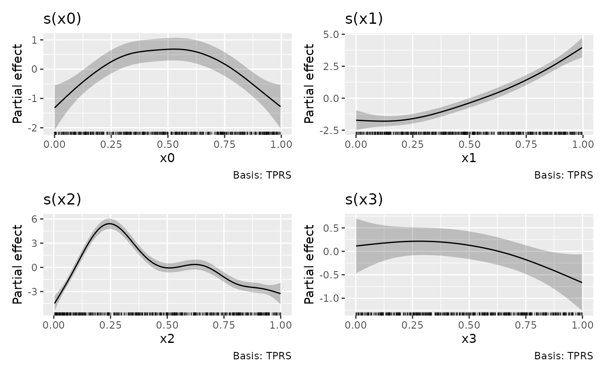
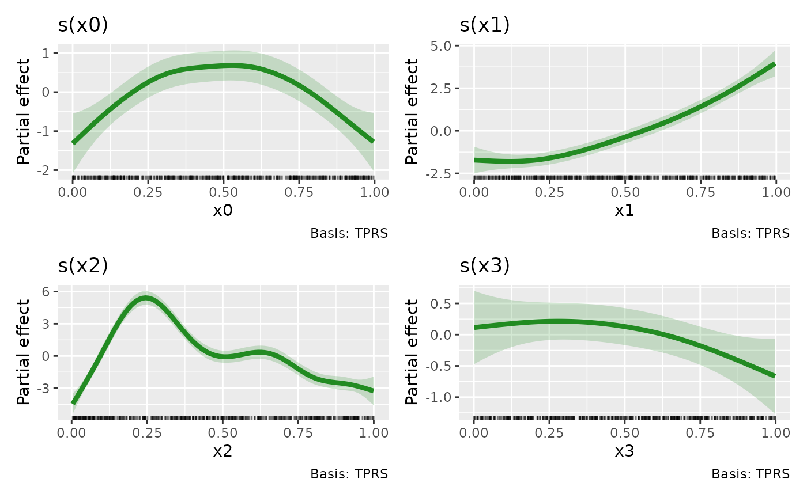
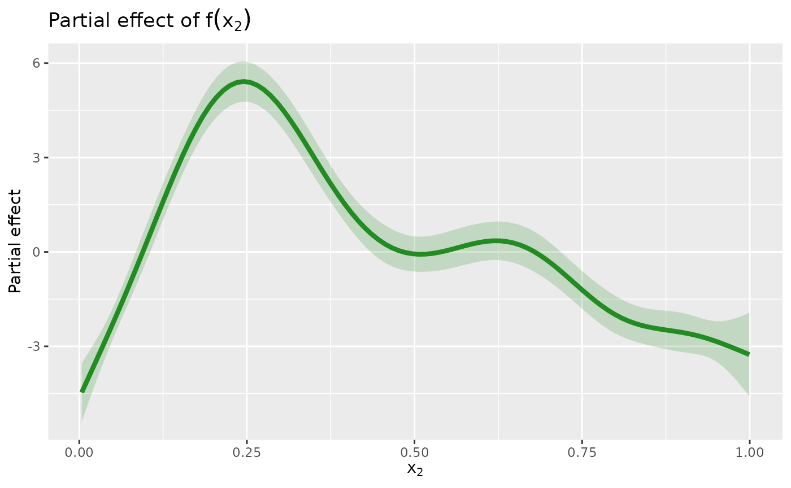
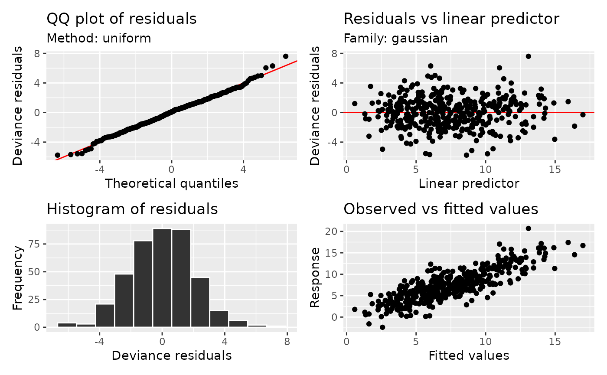
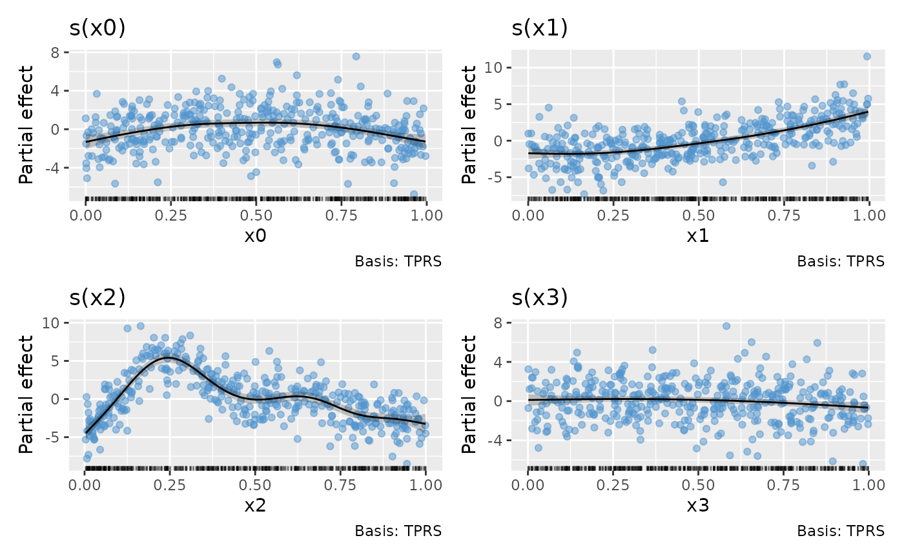

{gratia} provides plots, predictions and diagnostics for generalized additive models (GAMs). This introduction fits a GAM, plots its smooth terms, extracts the values behind those plots and checks the model’s residuals.
First load gratia and make {mgcv}’s model-fitting functions available.
We simulate 400 observations with four independent covariates sampled
uniformly between zero and one. The response combines nonlinear effects
of x0, x1 and x2 with independent
Gaussian noise of standard deviation 2. x3 has no effect on
the response. This gives us known patterns to look for in the fitted
smooths, including a covariate whose contribution should be close to
zero.
df <- data_sim("eg1", seed = 42)
df
#> # A tibble: 400 × 10
#> y x0 x1 x2 x3 f f0 f1 f2 f3
#> <dbl> <dbl> <dbl> <dbl> <dbl> <dbl> <dbl> <dbl> <dbl> <dbl>
#> 1 2.99 0.915 0.0227 0.909 0.402 1.62 0.529 1.05 0.0397 0
#> 2 4.70 0.937 0.513 0.900 0.432 3.25 0.393 2.79 0.0630 0
#> 3 13.9 0.286 0.631 0.192 0.664 13.5 1.57 3.53 8.41 0
#> 4 5.71 0.830 0.419 0.532 0.182 6.12 1.02 2.31 2.79 0
#> 5 7.63 0.642 0.879 0.522 0.838 10.4 1.80 5.80 2.76 0
#> 6 9.80 0.519 0.108 0.160 0.917 10.4 2.00 1.24 7.18 0
#> 7 10.4 0.737 0.980 0.520 0.798 11.3 1.47 7.10 2.75 0
#> 8 12.8 0.135 0.265 0.225 0.503 11.4 0.821 1.70 8.90 0
#> 9 13.8 0.657 0.0843 0.282 0.254 11.1 1.76 1.18 8.20 0
#> 10 7.51 0.705 0.386 0.504 0.667 6.50 1.60 2.16 2.74 0
#> # ℹ 390 more rowsFit one smooth for each covariate. Restricted maximum likelihood (REML) estimates the smoothing parameters, which control how strongly the fit penalises wiggliness in each smooth.
m <- gam(y ~ s(x0) + s(x1) + s(x2) + s(x3), data = df, method = "REML")
summary(m)
#>
#> Family: gaussian
#> Link function: identity
#>
#> Formula:
#> y ~ s(x0) + s(x1) + s(x2) + s(x3)
#>
#> Parametric coefficients:
#> Estimate Std. Error t value Pr(>|t|)
#> (Intercept) 7.4951 0.1051 71.35 <2e-16 ***
#> ---
#> Signif. codes: 0 '***' 0.001 '**' 0.01 '*' 0.05 '.' 0.1 ' ' 1
#>
#> Approximate significance of smooth terms:
#> edf Ref.df F p-value
#> s(x0) 3.425 4.244 8.828 8.78e-07 ***
#> s(x1) 3.221 4.003 67.501 < 2e-16 ***
#> s(x2) 7.905 8.685 67.766 < 2e-16 ***
#> s(x3) 1.885 2.359 2.642 0.0636 .
#> ---
#> Signif. codes: 0 '***' 0.001 '**' 0.01 '*' 0.05 '.' 0.1 ' ' 1
#>
#> R-sq.(adj) = 0.685 Deviance explained = 69.8%
#> -REML = 886.93 Scale est. = 4.4144 n = 400Plot the contribution of each smooth
Use draw() to plot the four fitted smooths. The
pointwise credible intervals show uncertainty at each plotted value of
the covariate.
draw(m)
Each panel shows one smooth’s contribution. Add the four contributions and the model intercept to obtain the fitted mean for this Gaussian identity-link model. The smooths are centred so that the intercept represents the overall level. For models with other links, add the contributions and intercept on the link scale, then apply the inverse link to obtain the fitted mean.
The smooth for x3 lets us check how the model handles a
covariate with no true effect. Its fitted curve can depart from zero
because of sampling variation, and its interval shows the uncertainty in
that departure.
Use a {ggplot2} theme to change the appearance of the plots. The
& operator applies the settings to every panel.
library("ggplot2")
draw(m) & theme(
geom.gratia.smooth = element_geom(colour = "forestgreen", linewidth = 1.5),
geom.gratia.interval = element_geom(fill = "forestgreen")
)
Extract smooth estimates and build a plot
smooth_estimates() returns the values used to draw the
curves, so you can inspect them or choose your own ggplot2 layers. By
default it evaluates each smooth over an evenly spaced covariate
grid.
sm <- smooth_estimates(m)
sm
#> # A tibble: 400 × 9
#> .smooth .type .by .estimate .se x0 x1 x2 x3
#> <chr> <chr> <chr> <dbl> <dbl> <dbl> <dbl> <dbl> <dbl>
#> 1 s(x0) TPRS NA -1.32 0.390 0.000239 NA NA NA
#> 2 s(x0) TPRS NA -1.24 0.365 0.0103 NA NA NA
#> 3 s(x0) TPRS NA -1.17 0.340 0.0204 NA NA NA
#> 4 s(x0) TPRS NA -1.09 0.318 0.0304 NA NA NA
#> 5 s(x0) TPRS NA -1.02 0.297 0.0405 NA NA NA
#> 6 s(x0) TPRS NA -0.947 0.279 0.0506 NA NA NA
#> 7 s(x0) TPRS NA -0.875 0.263 0.0606 NA NA NA
#> 8 s(x0) TPRS NA -0.803 0.249 0.0707 NA NA NA
#> 9 s(x0) TPRS NA -0.732 0.237 0.0807 NA NA NA
#> 10 s(x0) TPRS NA -0.662 0.228 0.0908 NA NA NA
#> # ℹ 390 more rowsTo work with one smooth, supply its label through
select. Use smooths() to find the labels
accepted by the fitted model.
smooths(m)
#> [1] "s(x0)" "s(x1)" "s(x2)" "s(x3)"Select s(x2) to extract the contribution of
x2 alone.
sm <- smooth_estimates(m, select = "s(x2)")
sm
#> # A tibble: 100 × 6
#> .smooth .type .by .estimate .se x2
#> <chr> <chr> <chr> <dbl> <dbl> <dbl>
#> 1 s(x2) TPRS NA -4.47 0.476 0.00359
#> 2 s(x2) TPRS NA -4.00 0.406 0.0136
#> 3 s(x2) TPRS NA -3.53 0.345 0.0237
#> 4 s(x2) TPRS NA -3.06 0.295 0.0338
#> 5 s(x2) TPRS NA -2.58 0.263 0.0438
#> 6 s(x2) TPRS NA -2.09 0.250 0.0539
#> 7 s(x2) TPRS NA -1.59 0.253 0.0639
#> 8 s(x2) TPRS NA -1.08 0.264 0.0740
#> 9 s(x2) TPRS NA -0.564 0.278 0.0841
#> 10 s(x2) TPRS NA -0.0364 0.289 0.0941
#> # ℹ 90 more rowsAdd interval limits with add_confint(), then draw the
estimates as a line and the interval as a ribbon. The output columns map
directly to the ggplot2 aesthetics in this example.
sm |>
add_confint() |>
ggplot(aes(y = .estimate, x = x2)) +
geom_ribbon(aes(ymin = .lower_ci, ymax = .upper_ci),
alpha = 0.2, fill = "forestgreen"
) +
geom_line(colour = "forestgreen", linewidth = 1.5) +
labs(
y = "Partial effect",
title = expression("Partial effect of" ~ f(x[2])),
x = expression(x[2])
)
Check the fitted model
Use appraise() to look for features the model has failed
to describe, such as residual spread changing with the fitted mean or
departures in the tails.
appraise(m)
Read the panels from left to right, starting with the top row.
- a quantile-quantile (QQ) plot of deviance residuals,
- a scatterplot of deviance residuals against the linear predictor,
- a histogram of deviance residuals, and
- a scatterplot of observed vs fitted values.
The data were simulated with Gaussian errors of constant variance, so we expect roughly constant residual spread and no systematic pattern against the linear predictor. Departures from the reference in the QQ plot can reveal where the observed residuals differ from what the fitted model would produce.
Add partial residuals to a smooth plot to compare the fitted curve with the observations after removing the estimated contributions of the other terms. For example, a consistent bend in the points around a flatter fitted curve can suggest that the smooth has missed part of the relationship.
draw(m, residuals = TRUE)
More on plotting, prediction and model checking
- Customise plots with themes, labels, legends and your own layers.
- Create prediction grids to evaluate smooths and fitted responses at chosen covariate values.
- Check a fitted model using residual diagnostics and posterior predictive checks.
The function reference provides argument descriptions and examples for individual functions.